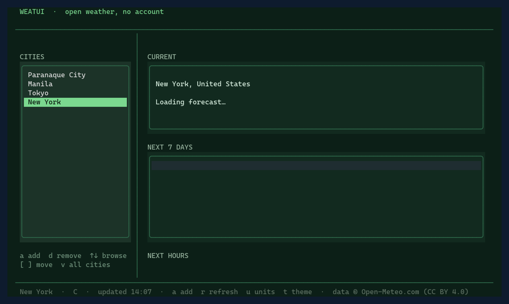
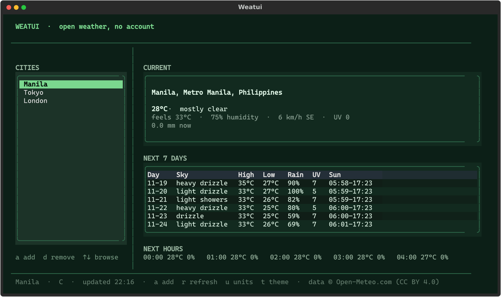

← Back to family hub
Weather · Python + Textual
Weather for the terminal.
Saved cities, current conditions, air quality, a 12-hour trend and seven-day detail. Powered by Open-Meteo; no API key.

pipx install git+https://github.com/Mark44928/Weatui.git
weatui

- Saved citiesreorder without editing JSON
- Seven dayswith rain, UV and sun times
- Air qualityAQI, PM2.5 and PM10
- City pickerchoose the right match
- All citiesside-by-side compare
- 12h trendtemperature sparkline
- No accountOpen-Meteo, no API key
Weather and geocoding data © Open-Meteo.com (CC BY 4.0). Weatui is not affiliated with Open-Meteo.